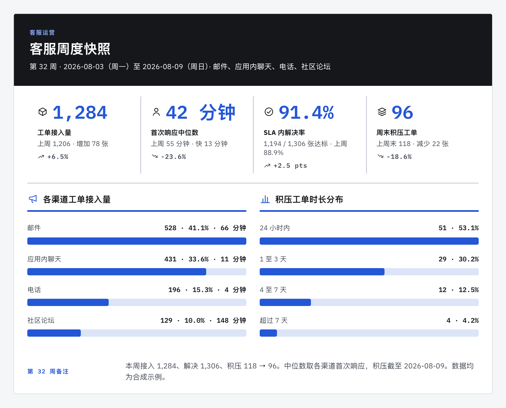
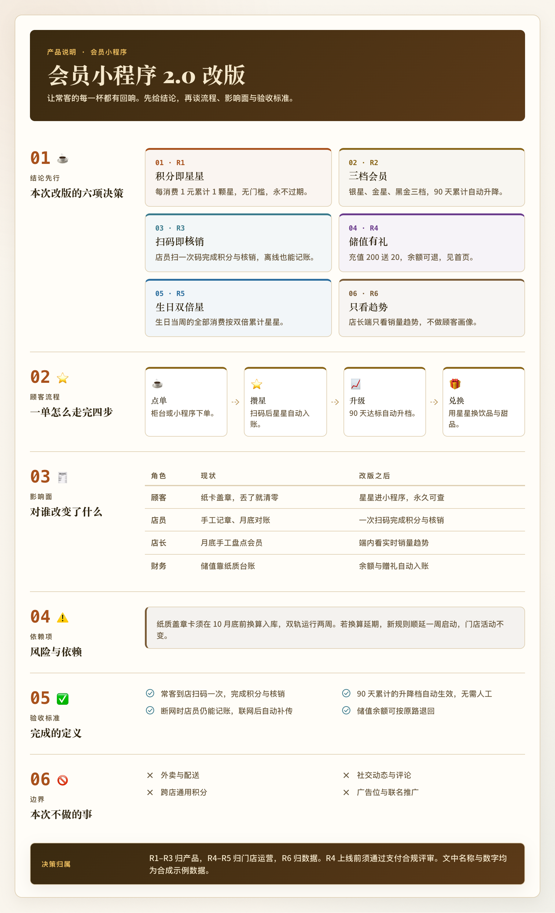
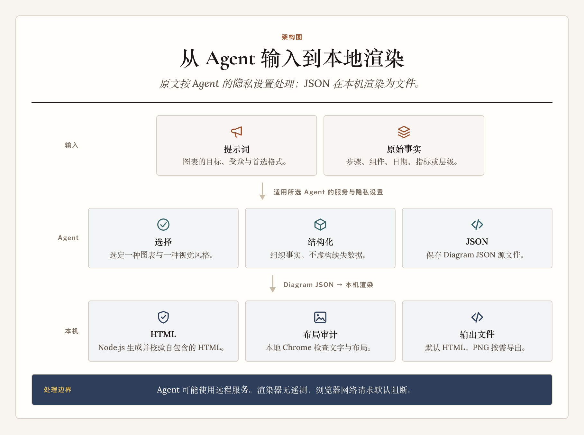
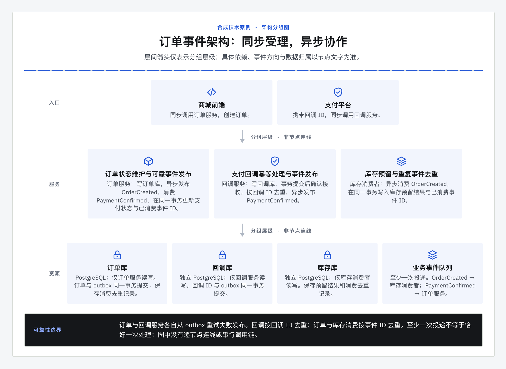
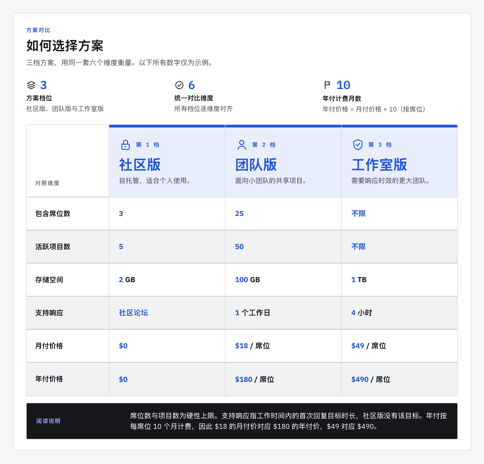

从落地页到激活
30 天同期群 · 48,200 位访客 → 8,700 人激活 · 合成示例数据
查看原始需求
请用 glass 风格画 30 天注册队列的漏斗：48,200 人访问落地页，18,795 人开始注册，12,640 人验证邮箱，8,930 人完善资料，8,700 人完成激活。每个阶段显示占全部访问者的比例，相邻阶段显示转化率和流失人数，全部从给定数量计算。不要补充数据不支持的结论。
五种风格，都是技能实际生成的产物。点击图片，查看原始需求、复制提示词、下载源文件。
30 天同期群 · 48,200 位访客 → 8,700 人激活 · 合成示例数据
请用 glass 风格画 30 天注册队列的漏斗：48,200 人访问落地页，18,795 人开始注册，12,640 人验证邮箱，8,930 人完善资料，8,700 人完成激活。每个阶段显示占全部访问者的比例，相邻阶段显示转化率和流失人数，全部从给定数量计算。不要补充数据不支持的结论。
2027 年 4 月 5 日（周一）– 5 月 30 日（周日）· 七条工作线，三个定档里程碑
请用 notebook 风格画社区大会筹备甘特图，共八周，第一周从 2027 年 4 月 5 日星期一开始。场地和日期确认：第 1–2 周；议题征集：第 3–5 周，在场地确认后开始；议题评审和排期：第 5–6 周；讲者确认：第 7 周，在评审后进行；售票和推广：第 3–8 周；志愿者招募和培训：第 5–7 周；彩排与大会周：第 8 周，在志愿者培训后进行。里程碑：第 5 周末征集截止，第 6 周末发布议程，5 月 29 日星期六开场。使用周序号坐标轴。
图表库的公开规划：从首次渲染到可扩展内核，2031–2033。
请用 editorial 风格画开源图表库的路线图，副标题“从首次渲染到可扩展内核”，包含六个里程碑：2031 Q2 v0.1 首次渲染（数值数组生成折线和柱形，仅一个画布，无交互和主题）；2031 Q4 v0.4 比例尺与坐标轴（线性、时间、序数比例尺，刻度标签由数据范围决定）；2032 Q1 v0.7 交互层（悬停、提示框、范围选择，键盘可达并向屏幕阅读器播报）；2032 Q3 v1.0 稳定 API（开始语义化版本管理，1.x 冻结图元、比例尺和主题契约）；2033 Q1 v1.4 服务端渲染（同一份定义无需浏览器即可生成静态 SVG，用于文档和邮件摘要）；2033 Q3 v2.0 插件 API（图元、比例尺、主题独立打包，新增图表不再扩大内核）。结尾说明季度是目标而非承诺，优先调整范围而非日期，每个里程碑都从主分支发布。
三个层级：1 名工作室负责人、3 名专业负责人与 10 名一线成员 —— 仅标注头衔，不列姓名。
请用 warm 风格画 14 人产品工作室的组织架构，只用职位不写姓名。工作室负责人负责方向、客户组合和招聘；三位专业负责人向其汇报。设计负责人负责产品和品牌的设计质量，团队含负责人共 5 人：2 位产品设计师（流程、页面、原型）、1 位品牌设计师（视觉识别、演示稿、网站页面）、1 位设计技术专家（可运行原型、UI 代码）。工程负责人负责技术方向、评审、发布，团队含负责人共 4 人：前端工程师（客户端、共享 UI 代码）、后端工程师（服务、数据模型、API）、平台工程师（构建、部署、工具）。交付负责人负责范围、排期、客户沟通，团队含负责人共 4 人：用户研究员（访谈、可用性测试）、技术写作者（产品文档、交接）、交付制作人（估算、排期、供应商）。标明每个分支人数与工作室总人数。
浏览器 → API 网关 → 认证服务 / 订单服务
请用 clean 风格画一张架构图：浏览器连接 API 网关，网关连接认证服务和订单服务。认证服务使用自己独立的 PostgreSQL；订单服务使用另一套独立的 PostgreSQL 和自己的 Redis。按客户端、接入、服务、数据四层展示，用节点说明标明服务与数据存储的归属。不要补充云厂商、协议、端口或指标。
中英文案例都提供源数据与可下载的产物。所有案例内容均为合成示例。

第 32 周 · 2026-08-03（周一）至 2026-08-09（周日）· 邮件、应用内聊天、电话、社区论坛
请用 clean 风格制作客服周报看板，时间为 2026 年第 32 周（8 月 3 日星期一至 8 月 9 日星期日）。收到 1,284 张工单，上周 1,206；首次响应中位数 42 分钟，上周 55 分钟；1,306 张已解决工单中，1,194 张在 24 小时 SLA 目标内，上周达标率 88.9%；周末未结 96 张，上周 118。按渠道展示接单量和首次响应中位数：邮件 528 / 66 分钟、应用内聊天 431 / 11 分钟、电话 196 / 4 分钟、社区论坛 129 / 148 分钟。未结工单账龄：不足 24 小时 51 张、1–3 天 29 张、4–7 天 12 张、超过 7 天 4 张。不得虚构其他数字。

把咖啡店会员改版整理成一页暖色说明：六项决策、顾客旅程、角色影响，以及风险、验收与范围。
用 warm 风格制作一页图文产品说明，保留以下标题和完整文案。眉题“产品说明 · 会员小程序”，主标题“会员小程序 2.0 改版”，副标题“让常客的每一杯都有回响。先给结论，再谈流程、影响面与验收标准。” ☕ 结论先行 / 本次改版的六项决策： 01 · R1 积分即星星：每消费 1 元累计 1 颗星，无门槛，永不过期。 02 · R2 三档会员：银星、金星、黑金三档，90 天累计自动升降。 03 · R3 扫码即核销：店员扫一次码完成积分与核销，离线也能记账。 04 · R4 储值有礼：充值 200 送 20，余额可退，见首页。 05 · R5 生日双倍星：生日当周的全部消费按双倍累计星星。 06 · R6 只看趋势：店长端只看销量趋势，不做顾客画像。 ⭐️ 顾客流程 / 一单怎么走完四步： ☕️ 点单：柜台或小程序下单。 → ⭐️ 攒星：扫码后星星自动入账。 → 📈 升级：90 天达标自动升档。 → 🎁 兑换：用星星换饮品与甜品。 🧾 影响面 / 对谁改变了什么： 角色 | 现状 | 改版之后；顾客 | 纸卡盖章，丢了就清零 | 星星进小程序，永久可查；店员 | 手工记章、月底对账 | 一次扫码完成积分与核销；店长 | 月底手工盘点会员 | 端内看实时销量趋势；财务 | 储值靠纸质台账 | 余额与赠礼自动入账。 ⚠️ 依赖项 / 风险与依赖： 纸质盖章卡须在 10 月底前换算入库，双轨运行两周。若换算延期，新规则顺延一周启动，门店活动不变。 ✅ 验收标准 / 完成的定义： ✓ 常客到店扫码一次，完成积分与核销； ✓ 90 天累计的升降档自动生效，无需人工； ✓ 断网时店员仍能记账，联网后自动补传； ✓ 储值余额可按原路退回； 🚫 边界 / 本次不做的事： × 外卖与配送； × 社交动态与评论； × 跨店通用积分； × 广告位与联名推广； 页脚标签“决策归属”，页脚“R1–R3 归产品，R4–R5 归门店运营，R6 归数据。R4 上线前须通过支付合规评审。文中名称与数字均为合成示例数据。”同时导出 PNG、可独立打开的 HTML 和完整的 Diagram JSON。

原文按所选 Agent 的隐私设置处理；Diagram JSON 在本机渲染为文件。
用 editorial 风格的分层架构总览解释 text2html2png：提示词与原始事实进入所选 Agent；Agent 可能使用远程服务，对话适用该服务的隐私设置。Agent 选择图表和风格，保留原始事实，编写 Diagram JSON。本地 Node.js 生成并校验自包含 HTML，本地 Chrome 审计布局。默认输出 HTML，只有明确要求时才导出 PNG。渲染器无遥测，默认阻断浏览器网络请求。请明确区分 Agent 处理和本地渲染，不要声称整个对话都留在本机。

合成技术案例：保留同步请求、异步事件路由、数据库归属和投递边界。层间箭头只标层级，具体依赖以节点文字为准。
请把下面这个合成订单系统案例整理成 clean 风格的架构分组图，同时导出 PNG。这是用于说明的设计案例，不是真实客户系统，也没有性能测试数据。分入口、服务、资源三层：商城前端同步调用订单服务创建订单；支付平台携带回调 ID，同步调用支付回调服务。订单服务独占读写自己的 PostgreSQL 订单库，订单记录与 outbox 记录在同一事务提交，再由该服务的发布器向事件队列发送 OrderCreated；它还从队列消费 PaymentConfirmed，在同一事务内更新支付状态并记录已消费事件 ID。回调服务独占读写另一套 PostgreSQL 回调库，回调 ID 与 outbox 记录在同一事务提交，提交后确认接收，再由该服务的发布器向同一队列发送 PaymentConfirmed。库存消费者从队列接收 OrderCreated，独占读写第三套 PostgreSQL 库存库，在同一事务内写入库存预留结果和已消费事件 ID。队列至少一次投递：OrderCreated 只交给库存消费者，PaymentConfirmed 只交给订单服务；发布失败从各自 outbox 重试；回调 ID 用于回调去重，已消费事件 ID 用于消费去重。请保留三套数据库的独占归属、同步与异步依赖和这些可靠性边界。层间箭头只表示分组层级，不能表示逐节点连线或串行调用链。不要补充网关、云厂商、吞吐量、延迟或恰好一次保证。

三档方案，用同一套六个维度衡量。以下所有数字仅为示例。
请用 clean 风格对比 Community、Team、Studio 三个套餐，按席位数、活跃项目、存储、支持响应、月付价格、年付价格逐项对齐。Community：3 席位、5 项目、2 GB、仅社区论坛支持、免费，自托管，适合个人工作和评估。Team：25 席位、50 项目、100 GB、1 个工作日响应、每席位每月 $18、每席位每年 $180，适合小团队共享项目。Studio：不限席位和项目、1 TB、4 小时响应、每席位每月 $49、每席位每年 $490，适合需要响应时效的大团队。年付按每席位十个月计费。附阅读说明：席位和项目为硬上限；响应时间指工作时间内首次回复目标，Community 没有目标；十个月规则解释 $18 对应 $180、$49 对应 $490。标题为“选择一个套餐”，不要选出赢家。

六道明确的闸门，确保每次变更都可评审、可安全推进。
请用 clean 风格画发布流程图：计划 → 开发 → 评审 → 测试 → 灰度 → 正式上线。内容保持简洁，说明每个阶段必须通过才能进入下一阶段。
30 天同期群 · 48,200 位访客 → 8,700 人激活 · 合成示例数据
请用 glass 风格画 30 天注册队列的漏斗：48,200 人访问落地页，18,795 人开始注册，12,640 人验证邮箱，8,930 人完善资料，8,700 人完成激活。每个阶段显示占全部访问者的比例，相邻阶段显示转化率和流失人数，全部从给定数量计算。不要补充数据不支持的结论。
2027 年 4 月 5 日（周一）– 5 月 30 日（周日）· 七条工作线，三个定档里程碑
请用 notebook 风格画社区大会筹备甘特图，共八周，第一周从 2027 年 4 月 5 日星期一开始。场地和日期确认：第 1–2 周；议题征集：第 3–5 周，在场地确认后开始；议题评审和排期：第 5–6 周；讲者确认：第 7 周，在评审后进行；售票和推广：第 3–8 周；志愿者招募和培训：第 5–7 周；彩排与大会周：第 8 周，在志愿者培训后进行。里程碑：第 5 周末征集截止，第 6 周末发布议程，5 月 29 日星期六开场。使用周序号坐标轴。
图表库的公开规划：从首次渲染到可扩展内核，2031–2033。
请用 editorial 风格画开源图表库的路线图，副标题“从首次渲染到可扩展内核”，包含六个里程碑：2031 Q2 v0.1 首次渲染（数值数组生成折线和柱形，仅一个画布，无交互和主题）；2031 Q4 v0.4 比例尺与坐标轴（线性、时间、序数比例尺，刻度标签由数据范围决定）；2032 Q1 v0.7 交互层（悬停、提示框、范围选择，键盘可达并向屏幕阅读器播报）；2032 Q3 v1.0 稳定 API（开始语义化版本管理，1.x 冻结图元、比例尺和主题契约）；2033 Q1 v1.4 服务端渲染（同一份定义无需浏览器即可生成静态 SVG，用于文档和邮件摘要）；2033 Q3 v2.0 插件 API（图元、比例尺、主题独立打包，新增图表不再扩大内核）。结尾说明季度是目标而非承诺，优先调整范围而非日期，每个里程碑都从主分支发布。
三个层级：1 名工作室负责人、3 名专业负责人与 10 名一线成员 —— 仅标注头衔，不列姓名。
请用 warm 风格画 14 人产品工作室的组织架构，只用职位不写姓名。工作室负责人负责方向、客户组合和招聘；三位专业负责人向其汇报。设计负责人负责产品和品牌的设计质量，团队含负责人共 5 人：2 位产品设计师（流程、页面、原型）、1 位品牌设计师（视觉识别、演示稿、网站页面）、1 位设计技术专家（可运行原型、UI 代码）。工程负责人负责技术方向、评审、发布，团队含负责人共 4 人：前端工程师（客户端、共享 UI 代码）、后端工程师（服务、数据模型、API）、平台工程师（构建、部署、工具）。交付负责人负责范围、排期、客户沟通，团队含负责人共 4 人：用户研究员（访谈、可用性测试）、技术写作者（产品文档、交接）、交付制作人（估算、排期、供应商）。标明每个分支人数与工作室总人数。
浏览器 → API 网关 → 认证服务 / 订单服务
请用 clean 风格画一张架构图：浏览器连接 API 网关，网关连接认证服务和订单服务。认证服务使用自己独立的 PostgreSQL；订单服务使用另一套独立的 PostgreSQL 和自己的 Redis。按客户端、接入、服务、数据四层展示，用节点说明标明服务与数据存储的归属。不要补充云厂商、协议、端口或指标。
在终端运行下面的命令。需要 Node.js 22.12+ 和已安装的 Chrome 系浏览器；Agent 会在需要时安装本地运行依赖。
npx skills add GODVvVZzz/text2html2png -g -y复制上方案例的提示词，把描述换成自己的内容，发给 Codex、Claude Code 或其他兼容 Agent。
默认产出 HTML。复制的提示词已明确要求同时导出 PNG。保留 JSON，后续可以修改内容、重新生成。
在浏览器中修改 Diagram JSON、预览和导出。本地试用页不理解自由文本；文字整理这一步由 Agent 完成。
git clone https://github.com/GODVvVZzz/text2html2png.git
cd text2html2png/skills/text2html2png
npm start技能要求 Agent 保留事实与关系，不补造指标。分享前，仍应对照原文检查图中的含义。
浏览器质检检查裁字、重叠、对比度和中文短标题换行。PNG 导出会先通过版面审计。
HTML、PNG 和版本化 Diagram JSON 都能保留。渲染在本机运行；Agent 如何处理输入，取决于你使用的服务。
架构示例按层展示，具体依赖写在节点说明里。任意节点连线请使用图编辑工具；科学统计图请使用数据绘图库。
{kind=link}
{kind=link}
{kind=link}
{kind=link}
{kind=link}
{kind=link}
{kind=link}
{kind=link}
{kind=link}
{kind=link}